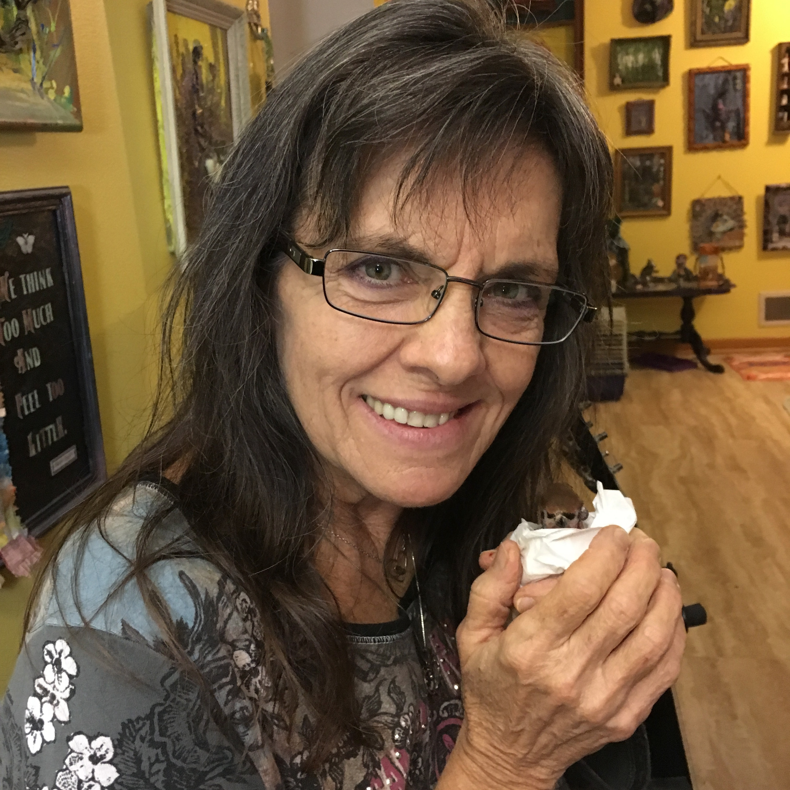
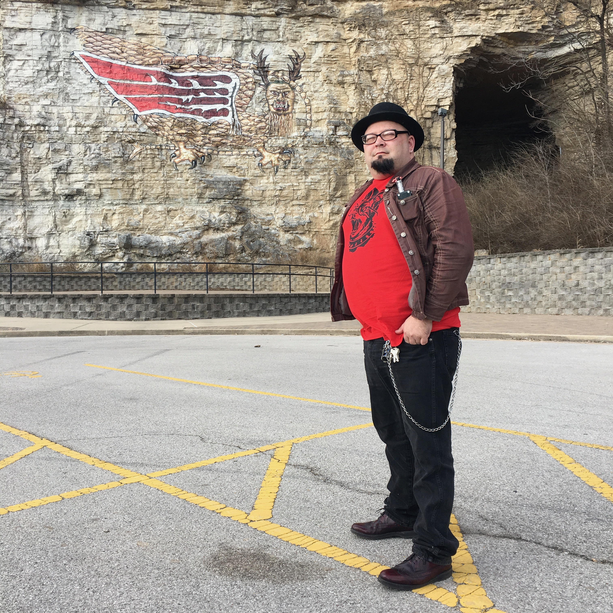
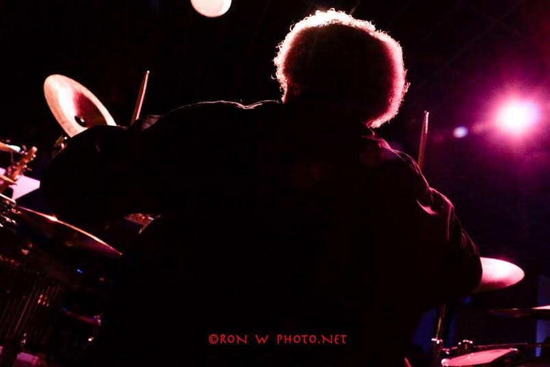
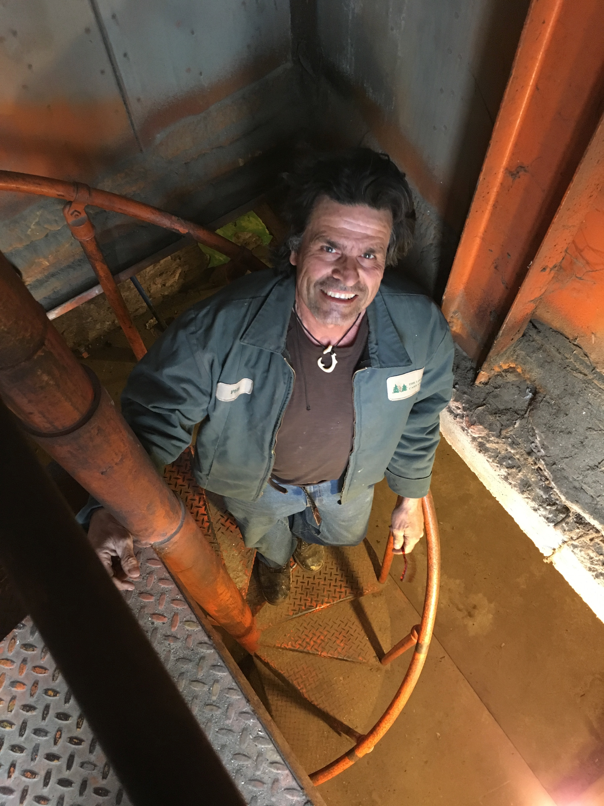

The Visual Arts Podcast Bringing STL Artists to the World.
Join artist Dan Jaboor, our intrepid host, as he explores the world of visual art: painting, photography, sculpture, and even the occasional weird performance art piece. This site is to give you quick access to just the interview episodes of the show, for all of you who don't want to hear the rants and theories of the topical episodes. Click any image to hear the full interview with that artist. Complete show notes and other additional content for each episode can be found at http://DanJaboor.com/podcast Be sure to search for Artistic Mission on your favorite podcast service and rate, review, & subscribe to help our audience grow.
Artistic Mission
is available on the following services:
Apple Podcasts - Google Play -
Stitcher - Libsyn - Soundcloud - TuneIn - STL Vernacular - iHeartRadio - Spotify
Artistic Mission is an official channel on the Apple News app.
Thanks for listening!
Cindy Royal |
Travis Ware |
Ron W. |
James R. Kyle
|
Phil Berwick |
Zack Smithey
|